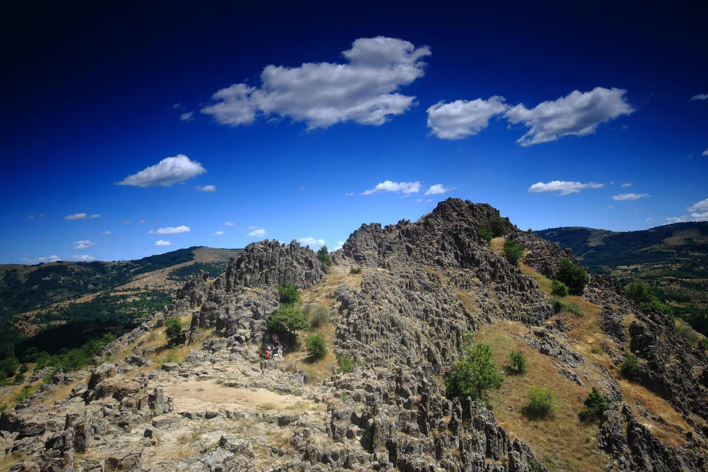

In Kumanovo
The National Museum
The objects lifted from Kokino's ritual pits are on display in an old town house in the centre of Kumanovo. See them before or after the hill — they change how it reads.
The National Institution Museum — Kumanovo was founded in 1964. It holds a collection of some 7,000 exhibits across all its departments — archaeological, historical, ethnological, fine art, and the department for records, documentation and conservation — the result of the field research and scholarship of its own staff.
The building
The permanent display is housed in an old town house in the centre of Kumanovo, built in 1926, with the characteristic features of the urban architecture of its time. In the courtyard there is a lapidarium.
The Kokino collection
Part of the permanent display is given over to the archaeological finds from Kokino. Among them are pottery from the Early and Late Bronze Age, a stone mould for casting bronze pendants, a two-handled mug in heavy ware from the 14th–11th centuries BC, and a bowl fragment decorated with incised wavy lines and representations of suns.
Opening hours: every day from 9:00 to 16:30, closed on Mondays. Hours were last published by the museum on its own site — it is worth confirming before a special trip.
Why go
On the hill you see the instrument. In the museum you see the people — the cups they drank from, the weights from their looms, the small clay legs they buried in the rock hoping to be made well. The two halves belong together.
The museum also manages the Kokino site itself and provides the expert guides for groups who arrange a visit in advance.